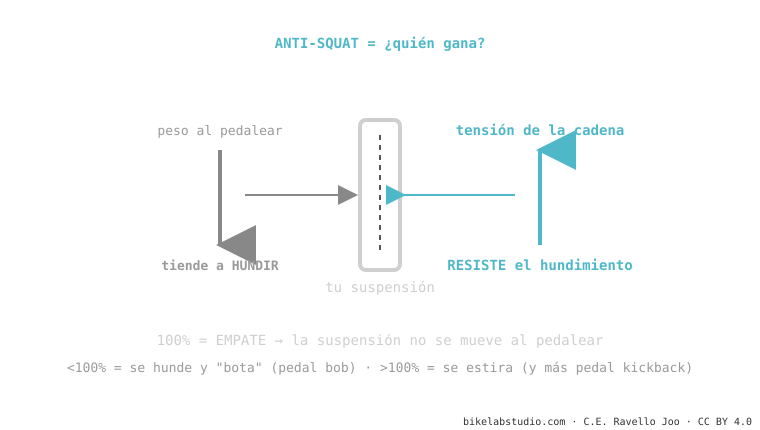

El anti-squat mide cuánto resiste el diseño que la suspensión se hunda al pedalear. Al pedalear, tu peso empuja la trasera hacia abajo; la tensión de la cadena la sostiene. Si gana el peso (anti-squat bajo), la bici se mece: es el pedal bob. Al 100% es empate: no se mueve. Pero subirlo tiene un precio — el pedal kickback. Forma parte de la cinemática de suspensión.
Si tu bici se mece como un caballito cuando pedaleas fuerte sentado, no es el amortiguador: es la geometría. Y tiene nombre.
¿Notaste que algunas bicis se mecen arriba y abajo al pedalear fuerte y otras se quedan firmes como una roca? Esa diferencia no la pone el amortiguador. La pone el anti-squat.
Al pedalear pasan dos cosas a la vez: tu peso se transfiere hacia atrás (tiende a hundir la suspensión) y la cadena tira del basculante (tiende a sostenerla). El anti-squat es, simplemente, quién gana ese pulso.

Por eso una bici con buen anti-squat en la zona de sag sube firme sin que tengas que usar el bloqueo todo el tiempo. Es eficiencia "gratis", de fábrica.
Subir el anti-squat suena ideal — pero tiene contra. Para generar anti-squat, la cadena tiene que tirar con fuerza del basculante, y eso provoca pedal kickback: en los baches grandes, la cadena estira y te patea los pedales hacia atrás. Mucho anti-squat = bici muy eficiente subiendo, pero con más kickback y a veces menos tracción en lo técnico. No es un número a maximizar: es un equilibrio que el ingeniero ajusta según para qué es la bici.
El anti-squat no es un solo número: depende de a qué sag lo midas, de la marcha que lleves (el plato y el piñón cambian el ángulo de la cadena) y de cuánto esté comprimida la suspensión. Por eso cuando una marca dice "110% de anti-squat", siempre hay que preguntar: ¿a qué sag y en qué desarrollo? Sin eso, el número está incompleto.
Anti-squat bajo en la zona de sag: el peso hunde la suspensión cada pedalada (pedal bob).
Empate: la cadena cancela la transferencia de peso y la suspensión queda neutra. No significa "perfecto", solo "no se hunde ni se estira" en ese punto.
No: trae más pedal kickback y a veces menos tracción. Es equilibrio, no maximizar.
Dinos el modelo y cómo la sientes; te decimos si es el cuadro (anti-squat) o el ajuste, y qué hacer. Escríbenos por WhatsApp
© 2026 BikeLab Studio. Contenido bajo CC BY 4.0: puedes copiarlo, traducirlo y publicarlo, incluso con fines comerciales. La cita es obligatoria. Sin atribución, la licencia se revoca de forma automática (CC BY 4.0, §6.a) y el uso pasa a ser una infracción de derechos de autor: solicitamos la retirada del contenido y su desindexación. · Diseño y propiedad: Carlos Ravello Joo